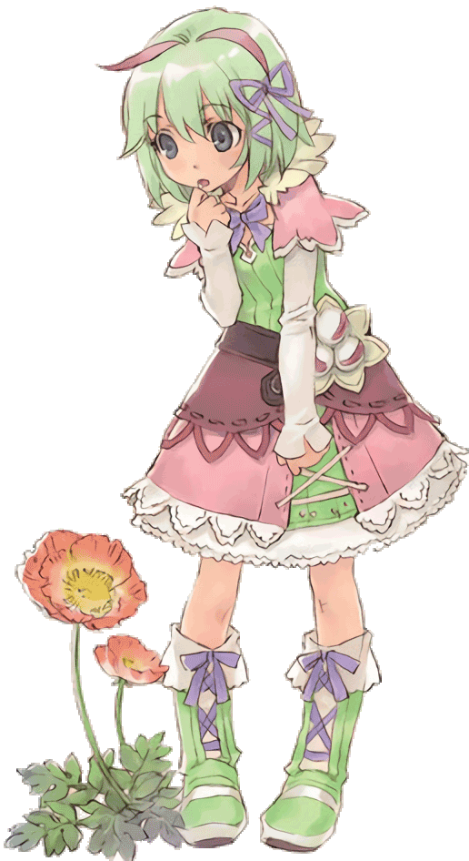

Como ya hemos acabado el proyecto de Stella Glow, nos ponemos manos a la obra con otro, que es un juego que seguro que a mucha gente le gustaría jugar en español:
Rune Factory 4. Rune Factory es una saga de videojuegos de Nintendo que ha hecho su última aparición en Nintendo 3DS.
¿Habrá Demo, como en el Stella Glow?
Al parecer, alguien del equipo de desarrollo de Rune Factory 4 decidió que no hacía falta una demostración del juego. Una pena, la verdad. Por desgracia, no hacemos milagros, por lo que no podemos hacer un parche para una demo que no existe. Eso sí: cuanta más gente se anime, antes terminaremos la traducción.
¿Cuánto durará la traducción?
El otro día llamamos al servicio técnico de nuestra bola de cristal; la suya también esta estropeada y no son capaces de predecir cuándo vendrán a arreglar la nuestra. Así pues, solo podemos decir que la traducción estará tan pronto como la terminemos: tres meses, un año, una década… No lo sabemos, pero lo que sí sabemos es que cuanta más gente ayude, antes estará :P
Aun así, si tanto te gusta el juego, puedes seguirnos en nuestra cuenta de
Twitter.
¿Dónde puedo adquirir el juego?
El juego lo puedes adquirir de manera digital o en físico.